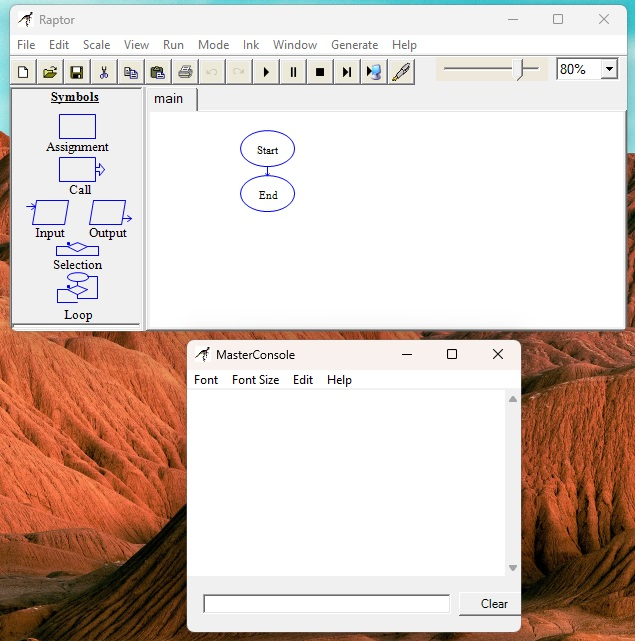
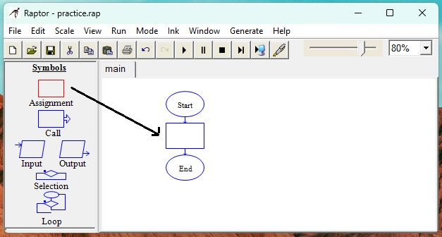
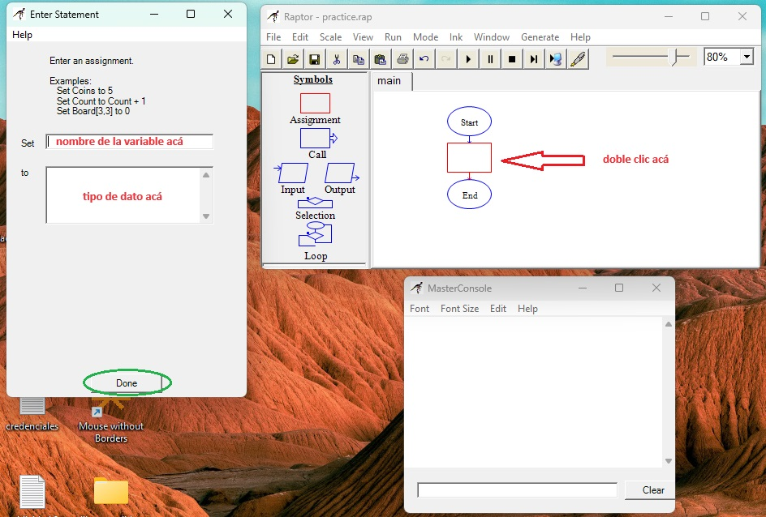

Raptor
bien, conozcamos raptor: no es muy complicado, la verdad.

contiene un panel lateral que contiene una serie de símbolos:
- assignment o asignación
- call o llamada
- input o entrada
- output o salida
- selection o selección
- loop o bucle
un panel principal con dos símbolos pre-establecidos (start y end) y un panel superior con una serie de controles bastante intuitivos
Hay una consola externa en la que se mostrará la respuesta de nuestros programas.
se que apenas es el capítulo dos, pero el tiempo es oro, así que vamos a comenzar de una vez con los ejercicios. Crearemos un programa sencillo, un problema matemático, una suma, así de simple.
aplicamos el principio que comienza por analizar: tenemos esta suma: 5 + 6 = 11, entonces tenemos tres espacios, a estos espacios los vamos a llamar variables, y son variables porque pueden cambiar a medida que el programa se desarrolla, estos espacios se van a llenar con los datos necesarios, en este caso, con cada número.
Antes de continuar, explicaré brevemente lo que es una variable: es una unidad de dato que puede cambiar de valor, se usan para guardar y recuperar datos, representar valores existentes y asignar unos nuevos.
existen varios tipos de dato:
- booleanos (sólo admiten valores binarios: sí o no, 0 y 1, true o false)
- numéricos (sólo admiten números; enteros o fracciones)
- string (admiten cadenas de texto mientras estén encerrados entre comillas por ejemplo: "hola", "123", "cd/12u")
- caracteres (admiten cualquier caracter mientras sea sólo uno)
Hay, claramente, muchos más, pero por ahora manejaremos sólo tres: Booleanos, Numéricos y String.
Bien, volvemos a Raptor y tocamos el primer símbolo, el rectángulo que se llama assignment, lo arrastramos hasta el medio de inicio y fin y con esto habremos creado el espacio para nuestra primera variable.

sobre el rectángulo assignment hacemos doble clic y se abrirá un recuadro para que ingresemos la información pertinente. En el primer campo vamos a colocar el nombre de la variable, este es un tema importante también ya que, al inicio al menos, solemos colocar nombres como si de mascotas se tratase, y es recomendable nombrarlas de acuerdo al objetivo de la variable, recuerden que vamos a necesitarlas mucho y su nombre debería dejar claro para qué se va a usar, así, una variable que va a manejar edades, podríamos llamarle "canela" pero eso no nos dirá nada dos días después, lo más lógico es nombrarle "edad". En este caso, sabemos que son tres espacios que contendrán números, así que a esta primera variable la nombraré "num1".
el segundo campo es para determinar el tipo de dato, como les dije, sólo vamos a tratar con tres, en este caso, sabemos que el tipo de dato es numérico así que colocaremos un número; podría ser cualquier número, pero hay que tomar en cuenta que sería ese el número inicial de la variable, entonces, en este caso particular, nos conviene que sea cero, así que escribimos un cero.
